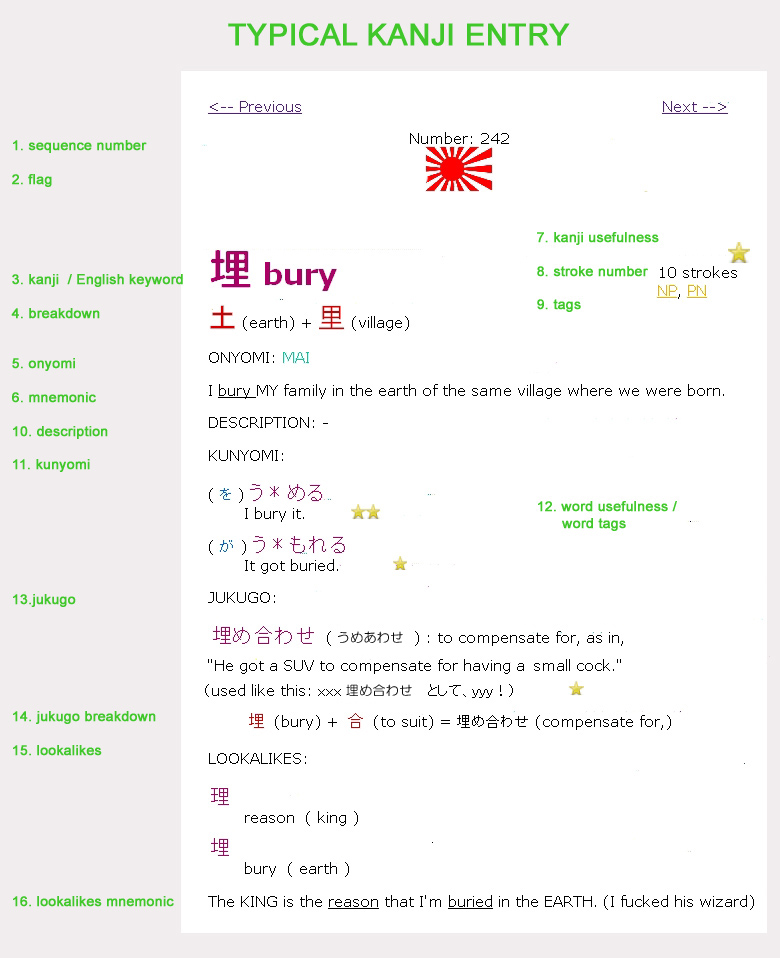

The 1,700 kanji in this dictionary are arranged in a RAD SEQUENCE so that most new kanji you learn are just a re-arrangements of parts you already know. About once every ten kanji, I'll teach you a brand-new, unfamilar radical (or new kanji) and then combine that new guy with things you already learned before - giving you the maximum results from memorizing the minimum of chicken-scratch.
If a kanji has a JAPANESE IMPERIAL NAVY FLAG above it, that means it's one of those new brand-new radicals or new kanji - something you have to learn from scratch. Subsequent kanji will combine this new shape with radicals you already learned.
Or, I should say, a UNIQUE English keyword. Unlike a lot of the other guys, I'm NOT going to define 話す (hanasu) and 喋る (shaberu) AND 言う (iu) all as "say." In my system, each Japanese synonym has a unique keyword which reflects its nuance: 言う is 'say,' but 話す is 'conversation', and 喋る is 'speak.' So there.
Here's what other kanji sites/software/books don't do: explain what EVERY LITTLE BIT OF A KANJI IS. They might tell you what the left-hand radical is, or what the bottom bit is. No way, man! Up in here, we explain what ALL the pieces are, and give you a handy little mathematic-lookin' breakdown that explains how all the radicals add up to the kanji.
Here's what else is rad: because of the RAD SEQUENCE, you have already learned those radicals.
Even more rad: if you - like me - tend to forget stuff as fast as you learn it, you just have to click on the radicals in the breakdown to go to their respective pages. Once you review them, then you can return to the original kanji and you'll be like, "Oh, shit, now I get it."
One more thing : radicals don't have meaning, any more than letters like 'A', 'B', or 'G' have meaning. The arrangement of 土 (earth) and 里 (village) to make 埋 is totally arbitrary - so don't give yourself a heart attack trying to figure out why earth and village. Radicals' keywords are just arbitrary nicknames. And even when kanji are used to make bigger kanji (as is the case here), those kanji LOSE THEIR MEANING. It's not like ancient Egyptian where a picture of an owl means owl. It's like English, where 'C', 'A' and 'T' mean 'CAT.' You don't ask "What does 'C' mean?"
Sorry, but it just burns me up that teachers don't emphasize that.
ONyomi is the way that the kanji is pronounced when it's used in compound words. Unlike the other guys, I give each ONyomi a specific English keyword, which is used in every mnemonic for every kanji with that ONyomi. Thus, しょう(SHOU) becomes SHOW, か(KA) becomes CAR, etc. In the case of our example kanji, まい (MAI) becomes MY.
Often, ONyomi come in short- and long-vowel pairs, which really fucks me up. For instance, しゅう and しゅ or しょう and しょ. To help tell the difference, I made a rule: Short-vowel ONyomi use abbreviations for the keywords: (two pungent examples: Smell His Odor for SHO, and Smell Her Underpants for SHU).
You're welcome.
For a list of all onyomi mnemonics, go here!
Mnemonic is one (sometimes two) sentences that tie together all the information you learned so far: the sentence contains ALL the radicals, the kanji keyword, and the ON-yomi keyword, and is usually in the form of a Yo Mama joke. If you can memorize the mnemonic sentance, you've memorized all the important things about the kanji.
Another thing the other guys don't do for you: tell you if the kanji is actually USED in newspapers, TV, manga, and magazines. Yeah, this is just opinion, but it's 4 peoples' opinions: me and three Japanese people from different walks of life.
Usefulness ratings are based on how often the word appears IN ITS KANJI FORM. If a word is really common, but usually written as hiragana, it'll have a low usefulness ranking, meaning you shouldn't bother learning the kanji version.
Speaking of usefulness : a LOT of the JOYO and JLPT kanji are NOT in here, because they're useless. Me myself, I am a grown-ass man and I am not interested in taking no tests. You won't find any crap kanji in this site, because I am trying to save you kids time so you can spend it myspacing or whatever you do these days.
Tags are another unique part of the kanjidamage system. They're like little warning labels that tell you if a kanji is especially dangerous or weird. Is the kanji only used on formal occasions? Is it pronounced funny ? Will it start a fight under certain circumstances? Is it usually written in hiragana anyway, so who cares? Tags tell you that shit.
Tags are all mysterious abbreviations like PN, FR, or NUBI. If you click on the tag, you'll be sent to an internet web page that explains it. On the internet!
Any miscellaneous pictures or nuances of the kanji go here.
"KUNyomi" is kind of the Bizarro twin of ONyomi.: ONyomi tells you how the kanji is pronounced in compound words, but KUNyomi tells you how the kanji is pronounced by itself.
In KUNyomi, the asterisk (*) shows where the kanji ends and the okurigana begin. For instance, if the kanji is 食 and the kunyomi is た＊べる, then it's normally written 食べる.
If a verb uses a weird particle, (へ、に、と, etc.） the weird particle will be written right next to the word! を is the default particle, so it's not written.
Also, words with する next to 'em, they can be used as verbs OR nouns. So if I say, for example, 小便する (shouben suru) (meaning 'to take a whiz,') - I'm assuming you're smart enough to figure out that 小便 WITHOUT する just means 'peepee.'
KUNyomi (and compound words, too!) also get rated for usefulness and tagged for weirdness.
JUKUGO is the Japanese word for "compound word".
The Achilles heel of 99% of books, study-cards, and kanji web apps is: lame jukugo. Jukugo that waste your damn time. Not here. These guys are arranged from five-stars to one-stars, so you can decide for yourself how nerdy to get with it. And kanji that - 90 % of the time - are ONLY used with one particular other kanji? They only will have that ONE jukugo listed. Deeyaamn. Why was that so hard for everyone else in the business to invent?!
Just like the "kanji breakdown"(#4 above), the JUKUGO BREAKDOWN teaches you how the compound word is made. This is RADDDDDDDDDDDDD. Why? Well, remember when I told you that radicals combined to make a kanji are as meaningless as ABC? Well, when kanji are combined to make jukugo, it's as meaningful and logical as combining "douche + bag" to make "douchebag." If you know the first two words, there is no way you can't guess the third word. Again, it's just like English. Thinking of jukugo in terms of their component kanjis' English keywords makes memorizing the meaning child's play. And it ALSO helps eliminate that troublesome "Is it XY? or YX?" phenomenon.
And, just like the kanji breakdown, if you have forgotten the meanings of one of the kanji, you can click on it to review. RAD.
OH MAN, it's yet another function the other guys don't give you. Lots of kanji look alike to the point of making you go insane. But - the good news is that to distinguish between lookalikes, you don't have to memorize the whole kanji: actually all you should do is concentrate on the ONE RADICAL that makes each kanji unique. In the LOOKALIKES section, I list the lookalikes next to the english keyword for their unique radical.
The mnemonic combines the lookalike kanji meanings, and their unique radicals, all in one sentance. If you memorize it, you'll never be troubled by the confusion again. Maybe. I hope so.
In the mnemonic, the kanji's meaning is underlined, and the UNIQUE RADICAL is in all caps.
Obviously it's best if you learn them in order - but, say you're reading a Japanese book, and come to a word which stumps you. You want to learn the kanji right away, so you can keep on reading your book - but you're only up to #16 in the dictionary. What do you do?
FIRST, TRY TO SOLVE IT WITHOUT YOUR DICTIONARY.
Check the context. If you are looking at 泳 and can't remember if it means 'eternity' (永) or 'swim' (泳), the context should help you. For example, "This sentence is about the ocean. Ok, I guess it must be 'swim' then."
Say all the radicals' keywords aloud a few times – maybe that'll make the mnemonic pop up in your memory. ("得 …Go! Sun! Temple! Go! Sun! Temple! You go, to the, . . uh, temple…You go to the temple of the sun god to OBTAIN virtue. It's OBTAIN!! 得る is OBTAINNNNN!! "
Draw the kanji several times – this also sometimes knocks the memory loose.
If you're trying to read a jukugo and get stuck on one of the kanji, try to think of another jukugo that uses that same kanji. Not only is this an effective way to remember, but the "AHA!!" feeling you get when you pull it off is one of the best things about studying Japanese. Say, you're trying to read 品質. You're like, "Something, shitsu. NNNnnnnnnn. … shitsu. Damn it! Where have I seen those three boxes before? Art? No, that's 芸実. Something about art, anyway. 作品!!! Sakuhin! Artworks! OK! SakuHIN = 作+品, so 品 = HIN. Therefore, 品質 must be HIN shitsu!"
Check for 'symbolic radicals'ー radicals such as 口, 木, and 火 that actually DO have meaning. If it's got a 火 in it, it'll probably have something to do with fire.
Remember: the left side radicals are likely to be SYMBOLIC – to have to do with the meaning of the kanji. The right side radicals are more likely to be STRONG *- to control the ONyomi of the kanji.
Still stuck?
OK FUCK IT, THEN, CRACK OPEN THE DICTIONARY.
WAIT – YOU STILL HAVE TO BE ABLE TO SPELL IT TO LOOK IT UP.
"Jesus, what a vicious circle. If I could fuckin' spell it, I wouldn't need to look it up, would I? You cocks!!!"
Yeah, I know. tell me about it. You just discovered yet another hideous, pernicious ass-ache available only in Japanese.
Let's say that you are lucky, and remember the ONyomi for BOTH kanji in a given word. So, you are searching using the ONyomi – but there ain't nothing there in your dictionary! In that case, try searching by using the KUN yomi instead. (remember : if there's okurigana, you gotta use the KUNyomi!)
If the jukugo is 3 or more characters long, and you can't find it in the dictionary, maybe it's two words. Try just looking up the first 2 kanji. (unless the first kanji is a common prefix such as, 無 不 反 …in which case, try looking up the word without the prefix)
If you can't remember whether the ON has a short vowel or a long vowel, try remembering the mnemonic, because the mnemonic uses the English keyword for the ONyomi. The English keyword for the short vowel ONyomi is gonna an abbreviation (SHO= Smell Her Odors) or (SO=Some One). While its long-vowel counterpart is going to have a regular keywords like SHOW(me your butt) or SOO(many butts).
If you have absolutely no clue what the ON yomi is – ask yourself, "Does the right-side radical look like the right-side radical of another kanji that I DO know?" Maybe it has the same ON yomi as that other kanji.
If nothing else works,chances are you got a 'ten-ten and maru' problem on your sweaty little hands. Ten-ten and maru are the little marks that change the pronunciation, such as ha-ba-pa (は・ば・ぱ) or sha-ja (しゃ・じゃ). For example, usually, 者 is pronounced SHA, and 本 is supposed to be HON. But in 忍者 (ninja), SHA becomes the softer JA: にんじゃ. And in the word 一本 (one rod), HON becomes PON :いっぽん.
Why? My first Japanese teacher said, "Because it's DIFFICULT to pronounce ninSHA and ichiHON." I think the whole class laughed at her, although maybe I just wanted them to have laughed at her. God forbid that Japanese be difficult! Let's invent 20 new syllables to cut down on the difficulty, sure! And apply those 20 new syllables in totally arbitrary places? Why not?
Anyway, long story short, try changing the first syllable of the second kanji to a ten-ten or a maru and see what happens.
Finally, if you DO manage to find the word in your dictionary, don't just nod, "Aha!" and keep reading. No no no. You need to write the kanji down like 10 times while saying the mnemonic. If you don't have time right there and then, at least write that kanji down once on a "list of kanji I fucked up on while reading this book" …so you can study the list later.
1) When you are learning a new word, draw it a bunch while repeating the names of the radicals. All gritting your teeth and muttering, "Earth, rifle, mouth, plate… earth, rifle, mouth, plate…" over and over. And then write it some more while saying the mnemonic out loud. That way, tomorrow when you already forgot what the kanji means, you can squint at it and say the names of the radicals, and the story should theoretically just pop into your head.!! "Earth… rifle. .. mouth. . pl?SALT!!! THAT'S FUCKIN' SALT!! 塩！！" And then the cute guy next to you in line at the bank will all look at you like, "Who is this fucking spaz??" But that is your problem, not mine.
2) Write the information from this book on flash-cards. Personally I'm only putting this on the internet because it's free. But if you're like me, trying to study on the internet, with porn and Youtube only a click away, is just futile. Cards are the way to go, because they're tiny. You can whip 'em out and study in line at the bank, at a red light, waiting for the bus, or whenever you got nothing else going on. I even study with my cards when I am in a traffic jam on the freeway, although I don't recommend it.
Put the kanji on the front, and the on / kun yomi, radicals, and mnemonic on the back. Don't forget to leave room for lookalike kanji that you'll encounter later in your studies. If you are writing a card for, say, 郡 , leave space on the front side for lookalikes you discover later. Next week, when you fuck up and confuse 群 with 郡 , you can write "It's NOT 群 !!" in the corner.
I wouldn't recommend writing any of the tags on the cards – except maybe the "SAME ON" tag.
2a) Yes, make cards for the radicals too.
3) For some kanji (particularly guys like 名 or 物 which tend to use the KUNyomi in the jukugo) I always get the KUN and ON readings mixed up. Anyway if you get stuck like that, here's an easy tip: learn the kun and on together as if it was one big word. 名 = NA-MEI and 物＝ BUTSUーMONO that's one strategy. to keep from getting them mixed up. of course this trick doesn't work all the time: some words have like 4 kun yomis.
4) Contact me via the forums or the KD facebook group.
Like all things on the internet, this is a continual work-in-progress. I'm working alone, doing this in my non-existent spare time, so there will doubtless be 100 mistakes. if you spot one, please let me know. Or if you have some lookalikes, new kanji, or think of new tags that you think should be included.
OK, that was just the most basic "how-to" for kanjidamage.
To get started studying right away, go here
To get the whole online textbook/rant, go here:
 KANJIDAMAGE
KANJIDAMAGE